Pengenalan tools
Sebelum memulai ada tools-tools yang digunakan dan perlu diinstall terlebih dahulu!
Teks Editor
Banyak pilihan untuk teks editor yang dapat digunakan, seperti Notepad++, Sublime Text, dan Visual Studio Code.
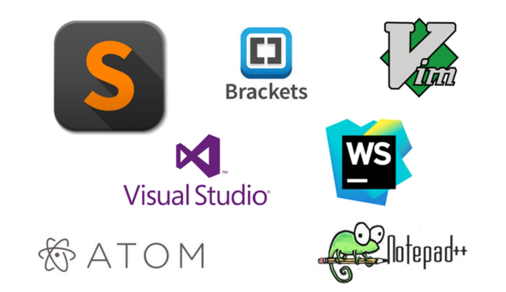
Visual Studio Code
Teks Editor yang umum digunakan saat ini adalah Visual Studio Code.Untuk melakukan installasi Visual Studio Code silah ikuti langkah-langkah berikut:
- Silahkan download file installer dari vscode. Klik download pada halaman web Visual Studio Code sesuai dengan sistem operasi yang digunakan.
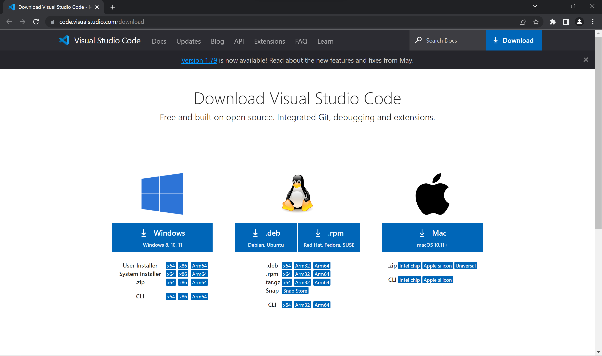
Setelah selesai download, klik dua kali pada file installer.
Jika muncul peingan Run as Administrator, klik Yes.
Kemudian akan tampil window Installer Microsoft Visual Studio Code. Untuk menyetujui License Agreement, pilih “I accept the aggrement” lalu next
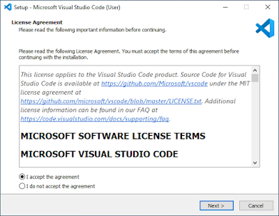
- Lalu pilih lokasi instalasinya. Jika ingin menggunakan lokasi default dapat langsung klik next
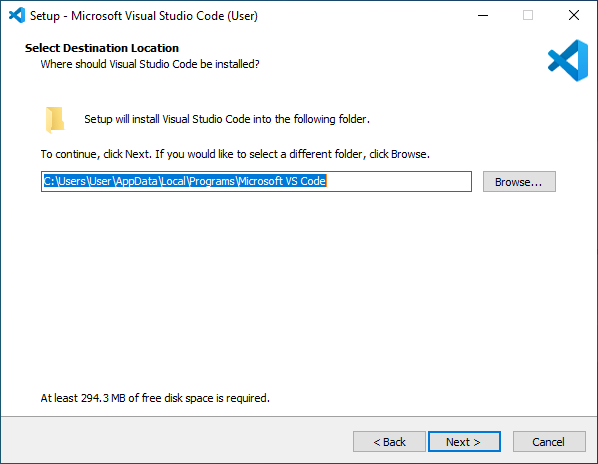
- Memilih lokasi shortcuts program. Jika ingin menggunakan default dapat langsung klik next
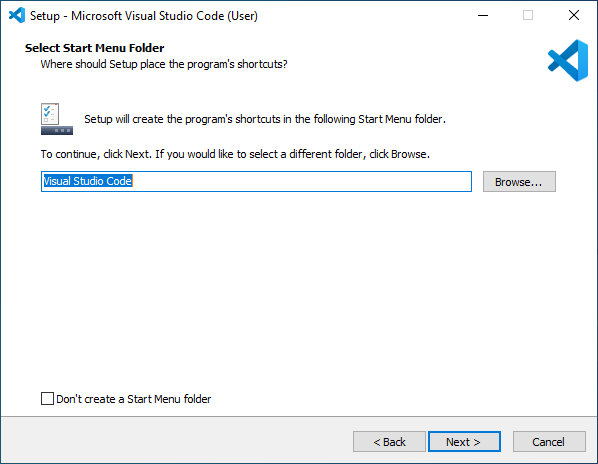
- Pada bagian Select Additional Tasks, terdapat beberapa tasks yang bisa diinstall atau tidak. Untuk memudahkan ketika membuka file melalui berkas atau explorer dapat di pilih semua dan klik next

- Klik Install dan Jalan Visual Studio Code
Berikut adalah tampilan dari Visual Studio Code

Web Browser
Web browser adalah perangkat lunak yang awalnya dirancang untuk menampilkan dokumen web/HTML. Namun, pada saat ini, web browser harus memiliki kemampuan untuk menginterpretasikan dan menjalankan JavaScript atau VBScript, menjalankan Java Applet, memahami dokumen XML, dan menjalankan dokumen khusus dengan menggunakan fasilitas plugin seperti file .swf Macromedia Flash, dan lain sebagainya.
Banyak web browser yang dapat digunakan, dan paling umum digunakan adalah Google Chrome dan Mozilla Firefox atau dapat menggunakan web browser yang tersedia pada laptop atau pc yang digunakan seperti safari atau microsoft edge.
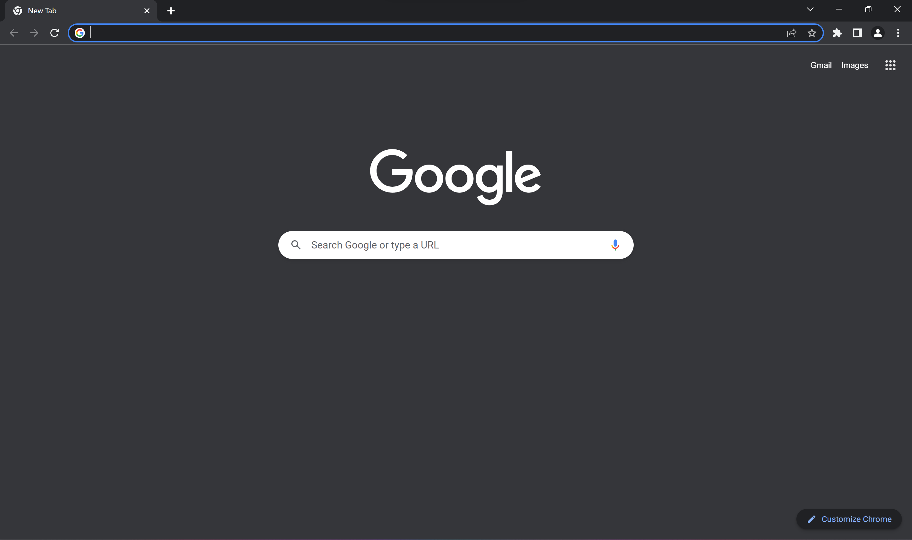
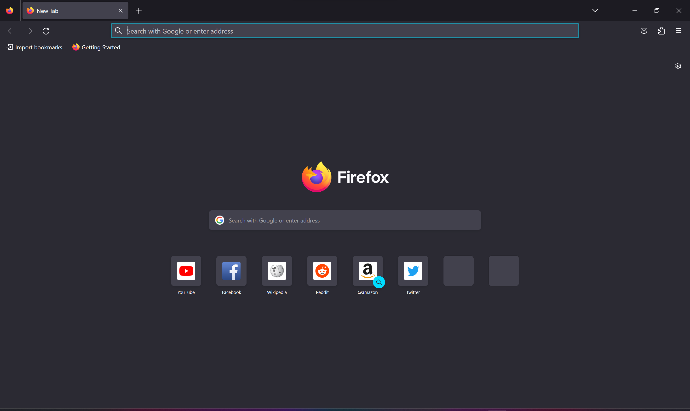
Web Server
Web Server adalah server HTTP yang bertugas menyediakan dokumen yang diminta oleh web browser. Saat ini, web server telah berkembang menjadi lebih kompleks karena harus melayani banyak fungsi dan bahkan menjadi pusat layanan-layanan lain.
Web server juga menjadi komponen yang sangat penting dalam application server. Sebagai server HTTP, web server harus dapat menangani permintaan dokumen yang diberikan oleh web browser dan juga harus bisa dikonfigurasi untuk berinteraksi dengan program-program seperti JSP, ASP, PHP, melalui CGI, dan sebagainya. Contoh-contoh web server yang populer antara lain Apache dan IIS (Internet Information Service).
XAMPP
XAMPP adalah sebuah web server open source yang dapat berjalan di berbagai sistem operasi seperti Windows, Linux, dan MacOS.
XAMPP menyediakan semua komponen yang diperlukan untuk mengelola sebuah website, termasuk Apache, MySQL/MariaDB, PHP, dan Perl. XAMPP dapat digunakan untuk membuat web server lokal di komputer.
Untuk menginstall XAMPP ikuti langkah-langkah berikut:
- Unduh file installer dari website XAMPP. Unduh sesuai dengan sistem operasi atau komputer yang digunakan.
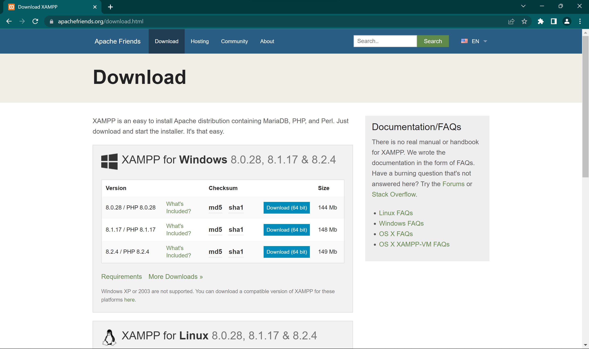
- Lakukan instalasi XAMPP sesuai panduan (wizard) yang ditampilkan dan pilih Yes untuk melanjutkan instalasi. Bila ada pesan eror biarkan saja.
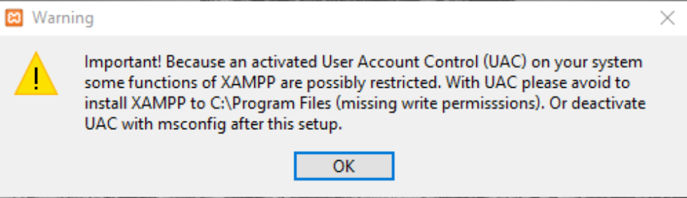
Pilih komponen yang Anda butuhkan dalam instalasi tersebut. Sebagai contoh, centang MySQL dan phpMyAdmin.
Tentukan direktori instalasi yang tepat, misalnya C:\xampp.
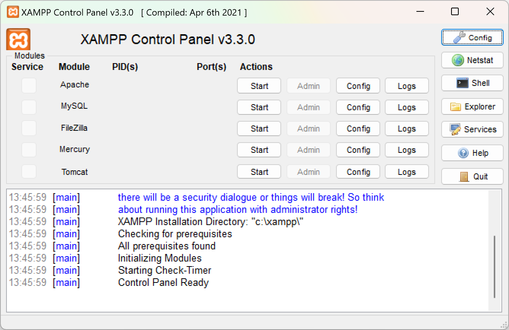
Untuk melihat confiurasi php dapat membuka config pada baris apache lalu membuka php.ini
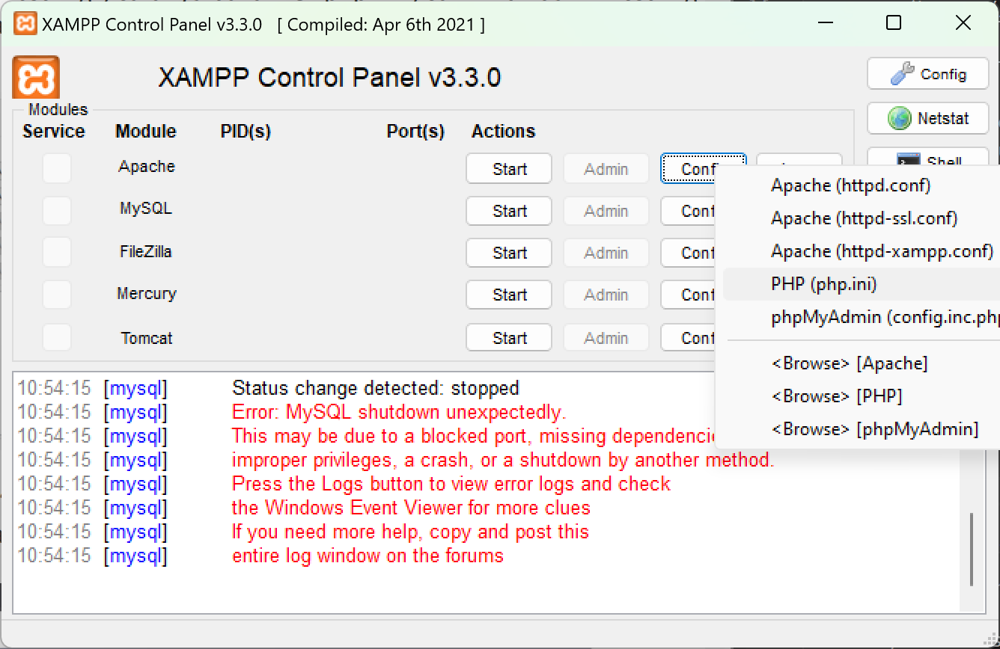
Cek versi php dan ekstensi lain dengan cara membuat file “info.php” yang isinya , letakkan pada C:\xampp\htdocs. Lalu buka localhost/info.php pada browser
Bootstrap
Bootstrap adalah sebuah kerangka kerja (framework) front-end yang populer untuk pengembangan desain web responsif (responsive web design). Dikembangkan oleh tim Twitter, Bootstrap menyediakan serangkaian komponen dan gaya CSS yang dapat digunakan untuk membangun tampilan web yang konsisten, menarik, dan responsif secara cepat.
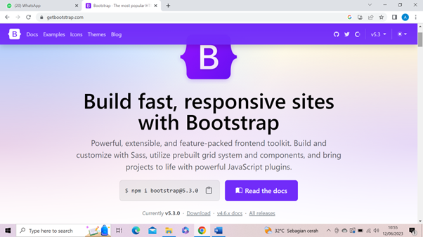
Cara installasi Bootstrap
Buka halaman resmi Bootstrap di https://getbootstrap.com.
Di halaman utama, Anda akan melihat tombol “Download” di bagian bawah. Klik tombol tersebut untuk mengunduh file Bootstrap.
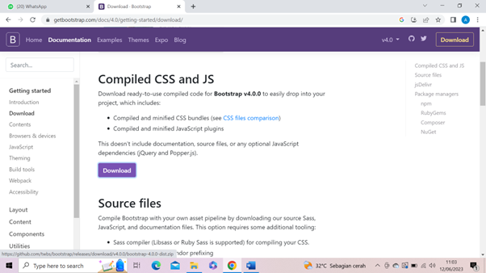
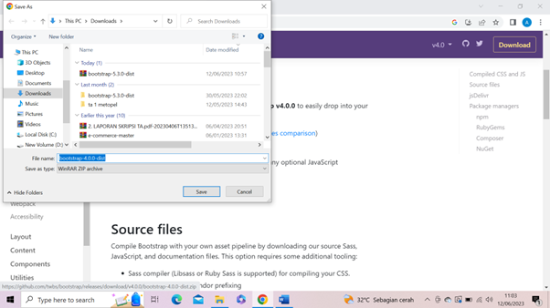
- Setelah selesai mengunduh, ekstrak file zip Bootstrap yang telah diunduh ke direktori proyek web Anda.
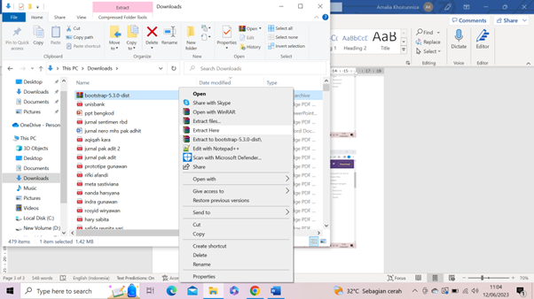
- Di dalam direktori proyek, buatlah folder baru (misalnya “css” dan “js”) untuk menyimpan file CSS dan JavaScript Bootstrap.
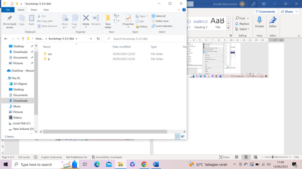
Salin file bootstrap.min.css yang ada di dalam direktori “dist/css” dalam file Bootstrap yang telah diekstrak, ke dalam folder “css” di dalam direktori proyek Anda.
Salin file bootstrap.min.js yang ada di dalam direktori “dist/js” dalam file Bootstrap yang telah diekstrak, ke dalam folder “js” di dalam direktori proyek Anda.
Setelah itu, Anda dapat menggunakan Bootstrap dengan menautkan file CSS dan JavaScript ke dalam halaman HTML Anda. Dalam elemen
<head>dari file HTML, tambahkan tag link berikut untuk menautkan file CSS Bootstrap:
<link rel="stylesheet" href="css/bootstrap.min.css">- Juga di dalam elemen
atau sebelum penutup tag
dalam file HTML, tambahkan tag script berikut untuk menautkan file JavaScript Bootstrap:
<script src="js/bootstrap.min.js"></script> - Sekarang, Anda dapat menggunakan kelas-kelas, komponen, dan gaya Bootstrap dalam halaman web Anda.Sekarang, Anda dapat menggunakan kelas-kelas, komponen, dan gaya Bootstrap dalam halaman web Anda.